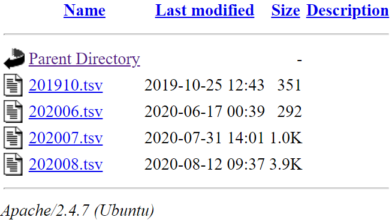
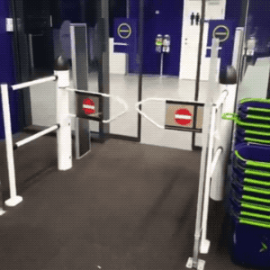

Building a JSL Ecosystem
GIT, Distribution, VBA, crash log collection, Unit-test, and more. . .
Serkay Ölmez & Fred Zellinger
Seagate Technology
JMP Discovery Summit, Nov, 2020
Firefox is suggested for best experience.
Press F11 to enter/exit full screen
Ctrl +/- to fit the content into the browser
Use arrow keys or click the buttons on the right bottom to navigate the slides
Note the table of contents button on the left bottom
Outline
-
Introduction
- A brief history of our JSL experience
-
Managing JSL and auxiliary scripts
- GIT: source code control and distribution
-
Closed loop development
- Develop, test, deploy and monitor
- Automated crash log collection and bug tickets
-
Closing Notes
- Lessons learned and best practices
-
Appendix
- Nuts and Bolts
A brief history of our JSL experience
Enabling Git
- Git is a distributed version-control system for tracking changes in source code during software development [1].
- There are various options to create GIT environment on company internal servers.
- For distributing JSL scripts, we use GITLAB [2].
Git Fundamentals: References on GIT.
Install self-managed GitLab: Multiple options to choose from, including free ones.
TortoiseGit: A Git revision control client with GUI, implemented as a Windows shell extension.
GitHub Desktop: Another Git revision control client with GUI for Windows.
-
Developers have copies of JSLs scripts in their local machine.
- Developer pushes updates to the remote repo via SSH/HTTPS.
-
Remote Repo takes in codes from developers. This also serves as a back up system.
- It also passes the codes to an HTTP server.
-
Files in the repo are served to users via HTTP server, like Apache HTTPd.
- Passing the communication through the server enables lots of features such as log collection.
-
Users load JSLs via include/load commands.
- As an addin launches, it retrieves the code from the repository via HTTP.
Enabling Git: Hello World
This is the simplest example of loading scripts from a GITHUB [3], [4].
//JMP Discovery Summit, 2020. Calling a script that lives in GITHUB.
// This is a static script distributed to users (possibly with addins.)
url="https://raw.githubusercontent.com/quarktetra/JMP_Discovery_2020_git_demo/master/hello.jsl"||"?q="||hex(Floor(RandomUniform(2^64)));
Eval(Parse(LoadTextFile(url)));
//The random number attached to the link enforces reload everytime rather than using cache
// With GitHub public, this can take up to few mins.
// if refresh fails, restrating JMP will enforce the refresh.Integration with PowerPoint
Many people rely on PPT reports which requires to couple JSL with PPT. JSL can launch PPT macros.
launchPPT = Function( {addin_path_,ppt_file_, macro_},// trigger the PPT with the macro
pptexefound=0;
for(temi=11,temi<=25,temi++, // search for POWERPNT.EXE
temppath="C:\Program Files (x86)\Microsoft Office\Office"||char(temi)||"\";
templist={};templist = Files In Directory( temppath);
if(contains(templist,"POWERPNT.EXE")>0,temi=100;pptexefound=1 );
);
if(pptexefound==0, //some people may have PPT under C:\Program Files not "C:\Program Files (x86)
for(temi=11,temi<=25,temi++,
temppath="C:\Program Files\Microsoft Office\Office"||char(temi)||"\";
templist={};templist = Files In Directory( temppath);
if(contains(templist,"POWERPNT.EXE")>0,temi=100;pptexefound=1 );
);
);
if(pptexefound==0,// cannot find POWERPNT.EXE ? Notify the user. It can be run manually
dialog(line up(1,"Could not locate POWERPNT.EXE, You will need to run PPT macro manually","PPT is @"||pathin, "Go to View-->Macros-->import_images-->Run" ))
);
if(pptexefound==1,// if POWERPNT.EXE is located, create a bat file and run it.
Save Text File( main_dir|| "launchPPT.bat","\!""||temppath||"POWERPNT.exe\!" /M \!""||addin_path_||ppt_file_||"\!" \!""||macro_||"\!" \!nexit" );
Open( main_dir || "launchPPT.bat" );
);
);VBA codes also require source control. Store the full PPT in repo and download it automatically up on change via JMP HTTP Request. The creation date of the local PPT file can be used to check if there is a new PPT in repo.
check_for_ppt = Function( {saved_ppt_path_,source_ppt_local_path_,newest_ppt_date_}, //using the creation date to check if the PPT needs to be updated.
if(!File Exists(saved_ppt_path_),request = New HTTP Request(URL(source_ppt_local_path_), Method( "Get" ));request<<download(saved_ppt_path_);,
try(timestamp = Creation Date(saved_ppt_path_);;
delta=newest_ppt_date_-timestamp;
if(delta>0, try(Delete File(saved_ppt_path_);
request = New HTTP Request(URL(source_ppt_local_path_), Method( "Get" ));
request<<download(saved_ppt_path_)));
)
)
);
Key JSL commands:
Creation Date(saved_ppt_path_); request = New HTTP Request(URL(pathtorepoppt), Method( “Get” )); request<<download(pathtodestination);
∴ JSL can be seamlessly coupled to PowerPoint while preserving source control requirements.
PPT demo
This is a complete example of coupling JSL to PPT [5]: Create PPT from image paths listed in a JMP table [6].
// A script to export images to PPT. To be coupled with a PPT VBA macro.
// Prepared for JMP Discovery Summit
// some of the functions require proper GIT set up, see the presentation from Serkay and Fred in the Discovery summit
names default to here(1);
/////////////////////////////////////////////////////////////////////////////////////////////////////////////////////////////////////////
get_user_id = Function( {}, // get user id from the environment
dll = Load DLL( "mpr.dll" );
dll << DeclareFunction("WNetGetUserA",
Convention( STDCALL ), Alias ( "GetUserName" ), Arg( UInt8, "format", input ), Arg( AnsiString, "username", output ),
Arg( UInt64, "length", update ),Returns( UInt32 ));
username = " ";;unlen = length(username);result = dll << GetUserName(0, username, unlen);dll << UnloadDLL();
username;
);
/////////////////////////////////////////////////////////////////////////////////////////////////////////////////////////////////////////
check_for_file = Function( {saved_file_path_,source_ppt_local_path_,newest_ppt_date_}, //using the creation date to check if the PPT needs to be updated.
if(!File Exists(saved_file_path_),request = New HTTP Request(URL(source_ppt_local_path_), Method( "Get" ));request<<download(saved_file_path_);,
try(timestamp = Creation Date(saved_file_path_);;
delta=newest_ppt_date_-timestamp;
if(delta>0, try(Delete File(saved_file_path_);request = New HTTP Request(URL(source_ppt_local_path_), Method( "Get" ));request<<download(saved_file_path_)));
)
)
);
//////////////////////////////////////////////////////////////////////////////////////////////////////////////////////////////////////
get_image_options=function({default_setup,tablename,path}, // if image settings file does not exist, create one with default info path=addin_path
add_this=function({title_,opt_},dto<<add rows(1);column("title")[nrow(dto)]=char(title_);column("options(default)")[nrow(dto)]=char(opt_));
default_setup_keys=default_setup<<Get Keys;
try(dto=open(addin_path||tablename);
wopt=Associative Array();for(wo=1,wo<=nrow(dto),wo++,wopt[column("title")[wo]]= column("options(default)")[wo]);
wopt_keys=wopt<<get keys;missing=associativearray(default_setup_keys);current=associativearray(wopt_keys);missing<<remove(current);missing_keys=missing<<Get Keys;
for(mm=1,mm<=length(missing_keys),mm++,add_this(missing_keys[mm],default_setup[missing_keys[mm]]));dto<<save(path||tablename);
,
dto=new table(tablename);dto<<new column("title");dto<<new column("options(default)");
for(mm=1,mm<=length(default_setup_keys),mm++,add_this(default_setup_keys[mm],default_setup[default_setup_keys[mm]]));dto<<save(path||tablename);
);
wopt=Associative Array();for(wo=1,wo<=nrow(dto),wo++,wopt[column("title")[wo]]= column("options(default)")[wo]); dto<<close window();
wopt;
);
/////////////////////////////////////////////////////////////////////////////////////////////////////////////////////////////////////////
launchPPT = Function( {addin_path_,ppt_file_, macro_},// trigger the PPT with the macro
pptexefound=0;
for(temi=11,temi<=25,temi++, // searh for POWERPNT.EXE
temppath="C:\Program Files (x86)\Microsoft Office\Office"||char(temi)||"\";
templist={};templist = Files In Directory( temppath);
if(contains(templist,"POWERPNT.EXE")>0,temi=100;pptexefound=1 );
);
//some people may have PPT under C:\Program Files not "C:\Program Files (x86)
if(pptexefound==0,
for(temi=11,temi<=25,temi++,
temppath="C:\Program Files\Microsoft Office\Office"||char(temi)||"\";
templist={};templist = Files In Directory( temppath);
if(contains(templist,"POWERPNT.EXE")>0,temi=100;pptexefound=1 );
);
);
if(pptexefound==0,// cannot find POWERPNT.EXE ? Notify the user. It can be run manually
dialog(line up(1,"Could not locate POWERPNT.EXE, You will need to run PPT macro manualy","PPT is @"||pathin, "Go to View-->Macros-->import_images-->Run" ))
);
if(pptexefound==1,// if POWERPNT.EXE is located, create a bat file and run it.
Save Text File( ppt_temp_folder|| "launchPPT.bat","\!""||temppath||"POWERPNT.exe\!" /M \!""||addin_path_||ppt_file_||"\!" \!""||macro_||"\!" \!nexit" );
Open( ppt_temp_folder || "launchPPT.bat" );
);
);
//////////////////////////////////////////////////////////////////////////////////////////////////////////////////////////////////////
column_predict=function({flavor,dt_desc_names_lc_,trial_list_},// tries various typical names to identify columns in the data
found_col=""; // "single" stops the search after first-found.
for(aa=1,aa<=nitems(trial_list_),aa++,
foundat=contains(dt_desc_names_lc_,lower case(char(trial_list_[aa])));
if(foundat>0,if(found_col=="",found_col=":"||dt_desc_names[foundat],found_col=found_col||",:"||dt_desc_names[foundat] );
if(flavor=="single",aa=nitems(trial_list_)+1)
)
);
found_col;
);
//////////////////////////////////////////////////////////////////////////////////////////////////////////////////////////////////////
create_dialog_panel=function({nc,dt_desc,image_opt}, // this builds up the dialog box, populates columns with best predictions, lots of dynamics behind the buttons to show the contents of the selected method
try(dt_desc_names=dt_desc<<get column names("string"),dt_desc_names={});
dt_desc_names_lc={};for(kk=1,kk<=nitems(dt_desc_names),kk++,dt_desc_names_lc[kk]=lower case(dt_desc_names[kk]));
ret_found_col=column_predict("multiple",dt_desc_names_lc,parse(image_opt["Possible Path Columns"]));
ipathadd="colList_ipath << append( {"||ret_found_col||"})";
ret_found_col=column_predict("multiple",dt_desc_names_lc,parse(image_opt["Possible Image Label Columns"]));
tcoladd="colList_ilabel << append( {"||ret_found_col||"})";
ret_found_col=column_predict("single",dt_desc_names_lc,parse(image_opt["Possible Slide Label Columns"]));
tcoladd_slide="colList_slabel << append( {"||ret_found_col||"})";
user_ppt_layout_list=image_opt["ppt layout"];
try(defaulttext=input_,defaulttext="");
if(nc==0,columnpanel="",columnpanel=expr(PanelBox("Columns", colListData=ColListBox(All,width(165),nLines(11)))));
if(nc==0,selecterpanel=expr(),
selecterpanel=expr(
PanelBox("Confirm/Modify column selections",
LineupBox(NCol(2),Spacing(3),
ipath_button= ButtonBox("Image Path(s)", colList_ipath<<Append(colListData<<GetSelected);),
colList_ipath = ColListBox(nLines(4)),ipathadd_,
ilabel_button=ButtonBox("Image Label(s)", colList_ilabel<<Append(colListData<<GetSelected);),
colList_ilabel= ColListBox(nLines(4)),tcoladd_,
slabel_button=ButtonBox("Slide Label(s)",colList_slabel<<Append(colListData<<GetSelected);),
colList_slabel= ColListBox(nLines(1)),tcoladd_slide_
),
SpacerBox(Size(1, 12))
)
);
selecterpanel=Substitute(name Expr(selecterpanel),expr(ipathadd_),parse(ipathadd),expr(tcoladd_),parse(tcoladd)
,expr(tcoladd_slide_),parse(tcoladd_slide)
);
);
checkboxpanel=expr(panel box("Export Options",
V List Box(
if(nrow(sel_rows)>0, sel_only=checkbox("Selected rows only")), if(nrow(sel_rows)>0,sel_only<<set(1)),
SpacerBox(Size(1, 10)),
if(nitems(user_ppt_layout_list)>1,
V list box( panel box("PPT Layout",
custom_layouts_cb = ComboBox(user_ppt_layout_list,<<SetFunction(Function( {this},
selection = this << Get Selected();
if(selection!="grid",gsetbox<<Visibility(Collapse),
gsetbox<<Visibility(Visible)) ) )
)
)
)
),
SpacerBox(Size(1, 10)),
gsetbox=panel box("Grid Settings",(
H list box(
V list box( Text Box("Columns "), img_per_row = ComboBox(img_per_row_List)),
V list box( Text Box("Rows "), img_num_row = ComboBox(img_num_rows_List))
)
),if(user_ppt_layout_list[1]!="grid",<<Visibility(Collapse))
),
SpacerBox(Size(1, 10)),
H list box(
button_Start_Querying=Button Box("Start Export",
selected_tcol=(colList_ilabel<<Get Items);
selected_ipath=(colList_ipath<<Get Items);
selected_slide=(colList_slabel<<Get Items);
if(nrow(sel_rows)>0,sel_only_value=sel_only<<get selected);
img_per_row_value=img_per_row<<get selected;
img_num_row_value=img_num_row<<get selected;
if(nitems(user_ppt_layout_list)>1,custom_layouts_selected=custom_layouts_cb<<get selected);
if(nitems(selected_ipath)>0,canceled=0;button_Start_Querying<<close window)
),
Button Box( "Cancel", canceled=1;)
)
)
);
);
allpanels =Vlist box(SpacerBox(Size(1, 5)),HListBox(columnpanel,selecterpanel),checkboxpanel,SpacerBox(Size(1, 5)),SpacerBox(Size(1, 5)));
allpanels;
);
///////////////////////////////////////////////////////////////////////////////////
logreporter=function({addin_name,username,addin_path_,logtext_,bugloc_},// pop up window to show the error
try(dtlog=open(addin_path_||"crashlog.jmp"),
dtlog=new table("crashlog");
dtlog<<new column("GID",character);dtlog<<new column("script_name",character); dtlog<<new column("crash_log",character);dtlog<<new column("Date",Numeric,Format( "y/m/d h:m:s" ));
);
index=nrow(dtlog)+1;
crash_logs=:crash_log<<get values(); dates=:Date<<get values();
thislogentry=logtext_||"__@__"||bugloc_;
thislogentry=substr(thislogentry,3,length(thislogentry));// removing new line
logexists=loc(crash_logs,thislogentry);
if(nrow(logexists)==0,
try(GTXJSN_AppendLog(username,"JMP_crash_log","crash","image_exporter.jsl",0,thislogentry));
dtlog<<add rows(1);:GID[index]=username;:script_name[index]=addin_name;:crash_log[index]=thislogentry; :Date[index]=Today()
);
dtlog<<save(addin_path_||"crashlog.jmp"); dtlog<<close window();
if(nrow(logexists)==0,
nw = New Window( "Something Went Wrong!", <<modal, V List Box(
panel box("",Text Box("Script Failed with the following log:"||logtext_))),
panel box("",Text Box ("A crash report has been created. We will be working on it") )
)
,
existingdate=as date(dates[logexists[nrow(logexists)]]);
nw = New Window( "Something Went Wrong, AGAIN!", <<modal, V List Box(
panel box("",Text Box("Script Failed with the following log:"||logtext_))),
panel box("",Text Box ("A crash report had been created on "||char(existingdate)||".\!n We are working on it!") )
)
);
print(" aborting with a report @ "||bugloc_||" with this error: "||logtext_); throw();
);
//////////////////////////////////////////////////////////////////////////////////////////////////////////////////////////////////////////////////////////////////////
grid_layout=function({},
img_per_row_value=num(img_per_row_value);img_num_row_value=num(img_num_row_value); // convert to numerical
image_s=800/img_per_row_value;
if(img_per_row_value==3,image_s=600/img_per_row_value;);
if(image_s>200 &img_num_row_value>1&img_per_row_value<3,image_s=200); // making sure images will fit nicely. Requires a bit trial and error to set the image size
// Compute the image and slide ids. These will be passed to PPT in a CSV
if(nitems(selected_slide)==0,// if no slide splitting column is selected, a new slide is added only when image index exceeds img_per_row_value*img_num_row_value
dtimages<<new column("slide_title",formula("TBD slide title"));
dtimages<<new column("slide_number",formula(1+floor(((row()-1)/(img_per_row_value*img_num_row_value)))));
dtimages<<new column("image_index",formula(row()))
, /// if a slide splitting column is selected, a new slide is added when the column content changes or when image index exceeds img_per_row_value*img_num_row_value
eval(substitute(expr(dtimages<<new column("slide_number",
formula(if(row()==1,1,if( as column(_scol)[row()-1]==as column(_scol)[row()],:slide_number[row()-1],:slide_number[row()-1]+1))))),
expr(_scol),selected_slide[1]));
eval(substitute(expr(dtimages<<new column("image_index",
formula(if(row()==1,1,if( as column(_scol)[row()-1]!=as column(_scol)[row()],1,:image_index[row()-1],:image_index[row()-1]+1))))),
expr(_scol),selected_slide[1]));
eval(substitute(expr(dtimages<<new column("slide_title",
formula( selected_slide[1]||": "||char(as column(_scol))))),
expr(_scol),selected_slide[1]));
);
dtimages<<new column("x_coord",formula(30+(image_s+20)*(mod(:image_index-1,(img_per_row_value)))));
dtimages<<new column("y_coord",formula(if(Mod( :image_index - 1, img_per_row_value * img_num_row_value ) > img_per_row_value - 1,330,80)));
:x_coord<< delete formula();:y_coord<< delete formula();dtimages<<delete column("image_index");if(nitems(selected_ipath)==1,dtimages<<delete column("image_type"));
dtimages<<new column("image_size",formula(image_s));
dtimages<<new column("plot_title",formula("TBD plot title")) ; // can add a title to each image. Not implemented for now. Instead a table/image will show
);
//////////////////////////////////////////////////////////////////////////////////////////////////////////////////////////////////////////////////////////////////////
//TOP of the Script
try(testmode,testmode=0); print(testmode);// an external tester script will drive this parameter. If this is run stand alone, disable it.
newest_ppt_local_date=13Aug2020:23:09:00; // this is the date the PPT in git was updated. If local PPT file is older, it will be updated
addin_name="IMAGETABLE_TO_PPT";// this script will be installed as an addin. This is the name for it.
addin_path="C:\IMAGETABLE_TO_PPT\";//set the path to the addin folder.
tablename="export_images_options.jmp"; // there will be a JMP table which users can modify to customize the script easily.
pptlayoutdir="ppt layout scripts\"; //this directory has the custom layouts
ppt_local_path="https://github.com/quarktetra/JMP_Discovery_2020_git_demo/blob/master/image_importer_local.pptm?raw=true";// path to PPT
av_templates=associative array();
av_templates["one_big_two_small.jsl"]= "https://raw.githubusercontent.com/quarktetra/JMP_Discovery_2020_git_demo/master/one_big_three_small.jsl"; // path to template scripts
av_templates["one_big_three_small.jsl"]="https://raw.githubusercontent.com/quarktetra/JMP_Discovery_2020_git_demo/master/one_big_two_small.jsl";
Create Directory(addin_path); // just create the directory in case the script is not installed via addin.
Create Directory(addin_path||pptlayoutdir);//will create if missing. This is the directory to hold custom layout scripts. These can be saved manually ot pushed in by developer
try(logreturned=log capture(user_name=get_user_id())); // user id can be collected from environment.
if(logreturned!=""&contains(logreturned,"*###*"),user_name="unknown"; print("Could not resolve the username. Proceeding without it") );// Print the error if any, and throw.
av_templates_keys=av_templates<<Get Keys();
for(aa=1,aa<=nitems(av_templates_keys),aa++,// retrieve these files from repo if they don't exist. Not refresh is enforced here. Will do this only once.
check_for_file(addin_path||pptlayoutdir||av_templates_keys[aa],av_templates[av_templates_keys[aa]],0)
);
logreturned="";try(data table("summary_for_ppt")<<close window()); try(dt_desc=currentdata table();); // clean up from previous run and take the active table.
ppt_temp_folder=addin_path||"ppt_temp_folder\";Delete Directory(ppt_temp_folder);Create Directory(ppt_temp_folder);// a temp folder to hold csv file for PPT input
if(is empty(dt_desc),// if no table, remind the user and quit.
New Window("Missing Table",<<Modal,Textbox("You need to have a table with image paths!"),Spacer Box(Size(80, 15)),H List Box(Spacer Box(Size(80, 15)),ButtonBox("OK")));throw()
);
default_setup=Associative Array();// This will create a default selection list if nothing is available
default_setup["Possible Path Columns"]={IMAGE_URL_1,URL,IMAGE_PATH};
default_setup["Possible Image Label Columns"]={IMAGE_TAG,Geography,Type,ERA};
default_setup["Possible Slide Label Columns"]={Medium};
default_setup["Title Options"]={"Title Page(1);Lay out(1,3);Name; Date; Table Name"};
default_setup["Images Per Row"]={"4","1","2","3","5","6","7","8"};
default_setup["Number of Rows"]={"2","1"};
default_setup["ppt layout"]={"grid","one_big_two_small.jsl","one_big_three_small.jsl"};
default_setup_keys=default_setup<<Get Keys;
try(logreturned=log capture(image_opt=get_image_options(default_setup,tablename,addin_path)));// Get the user settings. If not available, push in the defaults.
if(logreturned!=""&contains(logreturned,"*###*"), logreporter(addin_name,username,addin_path,logreturned, "get_image_options") );// Report the faliures to the developer.
img_per_row_List =parse(image_opt["Images Per Row"]);// Dropdown list for images/row. Will be something of this form {"4","1","2","3","5","6","7","8"};
img_num_rows_List=parse(image_opt["Number of Rows"]); //Dropdown list for number of rows. Will be something of this form {"2","1"};
try(Eval(Parse(LoadTextFile(addin_path||"utilities.jsl"))));// this loads the actual path to the PPT location and certain server paths
// server paths are saved externally due for security
// script will still work without it, but won't have git related features
custom_layouts0 = Files In Directory( addin_path||pptlayoutdir ); // get the files under the directory. Will keep only the ones with .jsl extension.
custom_layouts={};
for(cc=1,cc<=nitems(custom_layouts0),cc++,
if(substr(custom_layouts0[cc],length(custom_layouts0[cc])-3)==".jsl",insert into(custom_layouts,substr(custom_layouts0[cc],1,length(custom_layouts0[cc])-4)))
);// note that .jsl is dropped from the file name for simplicity in the dropdown box. Will paste it back later.
user_ppt_layout_list0=parse(image_opt["ppt layout"]);// this is the list set by the user. It will go into the drop box, after sanity checks
user_ppt_layout_list={};// this will hold the final list of available scripts. Need to confirm what user selected is available under pptlayoutdir.
for(cc=1,cc<=nitems(user_ppt_layout_list0),cc++,
if(contains(custom_layouts,user_ppt_layout_list0[cc])
|contains(custom_layouts,substitute(user_ppt_layout_list0[cc],".jsl",""))
|user_ppt_layout_list0[cc]=="grid"
&!contains(user_ppt_layout_list,substitute(user_ppt_layout_list0[cc],".jsl","")),
insert into(user_ppt_layout_list,substitute(user_ppt_layout_list0[cc],".jsl",""))
)
);
if(contains(user_ppt_layout_list,"grid")==0,insert into(user_ppt_layout_list,"grid")); //Making "grid" option always available even usere forgot it in the list
image_opt["ppt layout"]=user_ppt_layout_list;// pushing the final list into the array. It will shuttle it across functions.
if(ppt_local_path!="place_holder_path", // if the proper path to git is not set, skip the update. For a properly set gitpath script will check if a new version of PPT is available.
try(logreturned=log capture(check_for_file(addin_path||"image_importer_local.pptm",ppt_local_path,newest_ppt_local_date);));
if(logreturned!=""&contains(logreturned,"*###*"),
dialog("There is a new PPT Macro, but failed to update "||"image_importer_local.pptm. It may be open. Please close the file and try again." );
);
);
current data table(dt_desc);
nc=0;try(nc=ncol(current data table());if(ncol(dt_desc)==1,column(1)<<set selected),nc=0); // number of columns
//if nc=0, there are no images in data to push. However, a future version of the script will let user pull images from folder.
sel_only_value={};sel_rows=dt_desc << get selected rows;
custom_layouts_selected="grid";//set this default to begin with. It will get overwritten by user selection
try(logreturned=log capture(returned_panel=create_dialog_panel(nc,dt_desc,image_opt)));// build the panel expression
if(logreturned!=""&contains(logreturned,"*###*"), logreporter(addin_name,username,addin_path,logreturned, "create_dialog_panel") );// report failures to dev.
canceled=1;
if(testmode==0,UiTester=expr());
//UiTester=expr( );// disabling the tester for now
nwine=expr(New Window( "Query Options",<< Modal,UiTester_,returned_panel_));;
nwin=Substitute(name Expr(nwine),expr(UiTester_),parse(char(name expr(UiTester))),expr(returned_panel_),returned_panel);
eval(nwin);if(canceled==1,throw()); // run the dialog. Throw if canceled.
try(dt_desc<<delete column("_selected_rows_"););// deleting a column that might be left over from previous run.
// the script has an option to push only the selected rows of images to PPT. Marking such rows and carrying the marker along the computation.
if(nitems(sel_only_value)==0,
dt_desc<<new column("_selected_rows_",formula(1));:_selected_rows_<<delete formula();
,
dt_desc<<new column("_selected_rows_",formula(0));:_selected_rows_<<delete formula();
selrows=dt_desc<<get selected rows();:_selected_rows_[selrows]=1
);
try(selected_tcol=concat(selected_slide,selected_tcol));
insert into(selected_tcol,"_selected_rows_");
if(nitems(selected_ipath)>1, // if multiple path columns are selected stack them.
dtimages=dt_desc<<Stack(columns(selected_ipath),Source Label Column("image_type"),Stacked Data Column("image_path_ppt_export"),
Name( "Non-stacked columns" )(Keep( selected_tcol )));
dtimages<< Sort(Replace table, By( :image_type ), Order(Ascending ) );
,
dtimages=dt_desc<<Subset(Selected Rows( 0 ),columns( concat(selected_tcol,selected_ipath) ));
pcol=expr(dtimages<<new column("image_path_ppt_export",formula(col_)));;newcol=Substitute(name Expr(pcol),expr(col_),parse(selected_ipath[1]));eval(newcol);
:image_path_ppt_export<<delete formula();dtimages<<delete column(selected_ipath[1]);
pcol=expr(dtimages<<new column("image_type",formula(col_)));; newcol=Substitute(name Expr(pcol),expr(col_),selected_ipath[1]);eval(newcol);
);
dtimages<<select where(:_selected_rows_==0);dtimages<<delete rows();// remove the unselected rows
dtimages<<delete column("_selected_rows_");dt_desc<<delete column("_selected_rows_"); //clean up
////////PPT related computation
dtimages<<set name("summary_for_ppt");
try(if(nitems(selected_slide)>0,dtimages<< Sort(Replace table, By( column(selected_slide))), Order(Ascending ) ));
if(custom_layouts_selected!="grid", // run the custom layout, report errors
try(logreturned=log capture( Eval(Parse(LoadTextFile(addin_path||pptlayoutdir||custom_layouts_selected||".jsl")))) );// Get the user settings. If not available, push in the defaults.
if(logreturned!=""&contains(logreturned,"*###*"),logreporter(addin_name,username,addin_path,logreturned, custom_layouts_selected) );// Report the faliures to the developer.
);
if(custom_layouts_selected=="grid",
try(logreturned=log capture(grid_layout()));// Compute the coordinates with grid layout
if(logreturned!=""&contains(logreturned,"*###*"),logreporter(addin_name,username,addin_path,logreturned, "grid_layout") );// Report the faliures to the developer.
);
:slide_title<<delete formula(); if(nitems(selected_slide)>0,dtimages<<delete column(selected_slide[1]));
dtimages << move selected columns({:slide_number,:slide_title,:image_path_ppt_export,:x_coord,:y_coord,:image_size,:plot_title}, to first); // reorder to comply with PPT VBA macro
//dtimages<<select where(is missing(:image_path_ppt_export));dtimages<<delete rows();
try(logreturned=log capture(dtimages<<save(ppt_temp_folder||"summary_for_ppt_"||substitute(char(as date(today())),":","_")||".csv");));// save with a time stamp to avoid overwriting
// overwriting will cause issues once in a while as OS protects the file as read only.
if(logreturned!="", // failed to write? Inform the user.
dialog("Could not save the CSV file. Close PPT and try again. There may be background Excel Task running and holding the file. You can try ending Excel Tasks from the Task Manager" );throw()
);
try(logreturned=log capture(launchPPT(addin_path,"image_importer_local.pptm", "import_images");;));// trigger the PPT and let it do its job
// note that the PPT needs to be in the folder addin_path
if(logreturned!=""&contains(logreturned,"*###*"), logreporter(addin_name,username,addin_path_,logreturned, "launchPPT"));// report failures, if any.
print("All done");//JMP Discovery Summit, 2020. Calling a script that lives in GITHUB.
// This is a static script distributed to users (possibly with addins.)
// Calls a JSL file to push images to PPT. The paths of the images are required to be available in the active table.
url="https://raw.githubusercontent.com/quarktetra/JMP_Discovery_2020_git_demo/master/IMAGETABLE_TO_PPT.jsl"||"?q="||hex(Floor(RandomUniform(2^64)));
Eval(Parse(LoadTextFile(url)));
//The random number attached to the link enforces reload everytime rather than using cache
// With GitHub public, this can take up to few mins.
// if refresh fails, restarting JMP will enforce the refresh.Revising VBA demo
Below is a screen capture of how PPT VBA macros can be modified and distributed to users. ( see Nuts and Bolts slide for details. )
Script monitoring
- Contain possible crashes: try(logreturned=log capture(myfunction(arguments)));
- On crash, record and report the log: if(logreturned!="“&contains(logreturned,”###“),logreporter(scriptname,username,logreturned,”myfunction"));
-
logreporter function reports the crash. It pings the HTTP server, and a Common Gateway Interface (CGI)[7] captures the log:
- PathToServer/AppendLog.cgi?USERID=userid;DevID=devid;LogType=type;LogLevel=loglevel;ScriptName=scriptname;LogNote=lognote;

| LogDateTime | LogType | LogLevel | ScriptName | LogNote |
|---|---|---|---|---|
| 2020/08/10 6:30:52 PM | JMP_crash_log | crash | image_exporter.jsl | Name Unresolved: dt_desc_names_l{7} in access or evaluation of +dt_desc_names_l+ , dt_desc_names_l/###/__??? |
| 2020/08/11 10:21:19 AM | JMP_crash_log | crash | image_exporter.jsl | Can insert only into an L-value{6} in access or evaluation of +Insert Into+ , Insert Into/###/({}, “grid”)__??? |
| 2020/08/11 10:27:18 AM | JMP_crash_log | crash | image_exporter.jsl | NRow or NCol argument must be a Matrix or Data Table{6} in access or evaluation of +N Row+ , Bad Argument( {“one_big_three_small.jsl”} ), N Row/###/(custom_layouts)__??? |
| 2020/08/11 10:40:10 AM | JMP_crash_log | crash | image_exporter.jsl | too many arguments{6} in access or evaluation of +Expr+ , Expr/###/(Panel Box( “Export Options”,V List Box(If( N Row( sel_rows ) > 0,sel_only = Check Box( “Selected rows only” )),If( N Row( sel_rows ) > 0,sel_only << set( 1 )),Spacer Box( Size( 1, 10 ) ),If( N Items( custom_layouts ) > 0,V List Box(Panel Box( “PPT Layout”,img_num_row = Combo Box( custom_layouts_amended )))),Spacer Box( Size( 1, 10 ) ),Panel Box( “Grid Settings”,H List Box(V List Box(Text Box( “Columns” ),img_per_row = Combo Box( img_per_row_List )),V List Box(Text Box( “Rows” ),img_num_row = Combo Box( img_num_rows_List )))))), Spacer Box( Size( 1, 10 ) ), H List Box(bbx = (button_Start_Querying = Button Box( “Start Export”,selected_tcol = colList_ilabel << Get Items;selected_ipath = colList_ipath << Get Items;selected_slide = colList_slabel << Get Items;If( N Row( sel_rows ) > 0,sel_only_value = sel_only << get selected);img_per_row_value = img_per_row << get selected;img_num_row_value = img_num_row << get selected;If( 1,canceled = 0;bbx << close window;);)),Button Box( “Cancel”, canceled = 1 )))__??? |
| 2020/08/12 9:37:36 AM | JMP_crash_log | crash | image_exporter.jsl | subscripted key not in map[“custom_layouts”] in access or evaluation of +custom_layouts+ , “custom_layouts” /###/__??? |
Automated testing
-
Unit-tests are important to capture failures in individual modules, but not enough to capture interactions.
- NASA lost their Mars Climate orbiter: A software calculated the force the thrusters needed to exert in pounds. A separate piece of software took in the data assuming it was in the metric unit: Newtons[8].
- Boeing lost their Starliner. They admitted that they could have uncovered the issue with more rigorous integration tests[9].
- In the end, what counts is the integration test. And for light-weight scripts, it does not take too long.
 

A method to test integration: As the script is developed, create hooks for tester injection and co-develop the tester.
Example: Automated test of a modal window
A snippet from the code to be tested:
try(testmode,testmode=0);// an external tester script will drive this parameter. If this is run stand alone, disable it.
if(testmode==0,UiTester=expr());// define a null tester if the script is runnin itself.
nwine=expr(New Window( "Query Options",<< Modal,UiTester_,returned_panel_));;
nwin=Substitute(name Expr(nwine),expr(UiTester_),parse(char(name expr(UiTester))),expr(returned_panel_),returned_panel);It has an expression UiTester injected into the modal window. Note that when the code runs by itself, it turns of the testers. So users can run the code as is.
The tester code:
testmode=1;// this will put the loaded script into the test mode. Testers will be pushed down on to the loaded script:
UiTester=expr(<<On Open(
:IMAGE_URL_1<<set selected();ipath_button<<click;
button_Start_Querying<<click;
));
try(logreturned=log capture( Eval(Parse(LoadTextFile("IMAGETABLE_TO_PPT.jsl")))) );// Run the script with testers enabled.
if(logreturned=="",print("script did not fail"), print("Script failed with this log: "||logreturned));It sets testmode=1. It defines UiTester: Select a column and put it in a role. Load the code to be tested, runs it, and collects crash logs, if any. In a full blown tester, there will be many hooks to be tested with many different scenarios.
Automated bug tickets
-
The user knows the script crashed (DUH!)
- It is important to capture the failures and give meaningful crash info to the user.
-
The developer knows the script crashed
- Upon crash, a log instance is automatically generated.
-
A bug ticket is created automatically.
- The user knows that the developer knows the script crashed, and can ‘watch’ the issue being worked on and resolved.
- Containing script crashes and capturing the logs enables the ability to report the crash to the developer using various issue tracking software, such JIRA of Atlassian.
- JIRA supports REST API. See server based JIRA and Cloud based JIRA.
-
A Basic Jira ticket can be created by the code below:
- CMD code: curl -D- -u username:pwd -X POST -d “@data.json” -H “Content-Type: application/json” PathToJiraRest
- data.json: {“fields”: {“project”: {“key”: “projectname” },“assignee”:{“name”:“developer_JIRA_ID”},“summary”: “Insert the captured log here”, “description”: “Creating of a JSL bug ticket: Meta data goes here”, “issuetype”: {“name”: “Bug” } }}
Closing notes
-
GIT is the cornerstone of managing scripts:
- It enables source control and collaboration.
- It also enables stacking scripts with ease to build a composite script.
-
PowerPoint is an integral part of the ecosystem:
- PPT files and macros are source controlled by GIT and distributed via JSL addins or HTTP requests.
-
Usage and crashes are logged and reported:
- Developers have visibility to the performance of their scripts.
- Users have visibility to bug fix tickets.
-
Few key JSL best practices:
- Make the script data agnostic. No explicit column names in the script, at all.
- Push such definitions to a simple JMP table. This gives general users the ability to customize.
- Create hooks to import user defined JSL scripts. This gives experienced users the ability to customize via JSL.
- Expressions and associative arrays are your best JSL friends.
- Test, test, and test.
- Commit twice, push once.
Image exporter: Nuts & Bolts
References
Transitions
[1] Wikipedia, “Git — Wikipedia, the free encyclopedia.” http://en.wikipedia.org/w/index.php?title=Git&oldid=972807073, 2020.
[2] “GITLAB.” https://about.gitlab.com/.
[3] S. Ölmez, “Hello.jsl.” https://github.com/quarktetra/JMP_Discovery_2020_git_demo/blob/master/hello.jsl.
[4] S. Ölmez, “Call_hello.jsl.” https://github.com/quarktetra/JMP_Discovery_2020_git_demo/blob/master/call_hello.jsl.
[5] S. Ölmez, “IMAGETABLE_TO_PPT.” https://github.com/quarktetra/JMP_Discovery_2020_git_demo/blob/master/IMAGETABLE_TO_PPT.jsl/.
[6] H. Hardner and S. Ölmez, “Images in data tables and related jsl tools.” https://discoverysummit.jmp/en/2020/usa/home.html.
[7] Wikipedia, “Common Gateway Interface — Wikipedia, the free encyclopedia.” http://en.wikipedia.org/w/index.php?title=Common%20Gateway%20Interface&oldid=969624432, 2020.
[8] Wired, “Metric math mistake muffed mars meteorology mission.” https://www.wired.com/2010/11/1110mars-climate-observer-report/, 2010.
[9] spaceflightnow.com,“... testing would have caught starliner software problems.” https://spaceflightnow.com/2020/02/28/boeing-says-thorough-testing-would-have-caught-starliner-software-problems/, 2020.